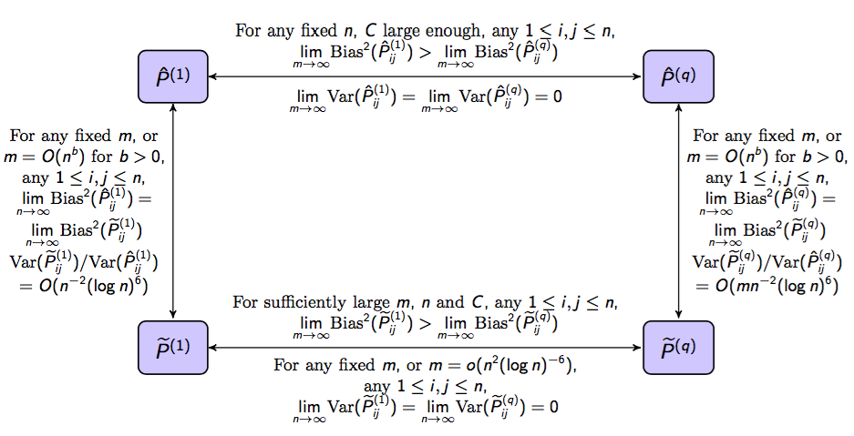
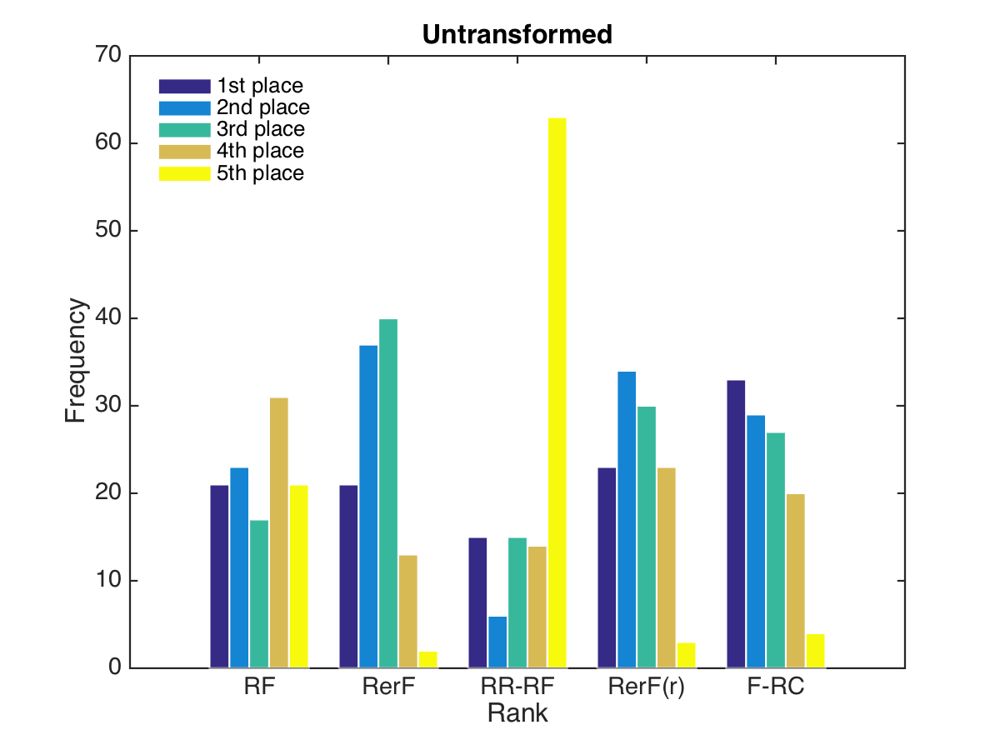

[*Back*](./index.html)
# Statistical Science
## Time-Series
## Graphs
### Vertex Nomination via Seeded Graph Matching
We aim to identify vertices in one network that correspond to a particular vertex of interest in a second network. To this end, we consider a pair of networks for which there exists some notion of correspondence between vertices in the two networks, supposing that there is a particular vertex of interest (VOI) known to be in the first network, which has a corresponding vertex we would like to identify in the second network. We explore a principled methodology appropriate for situations in which the networks are too large for brute-force graph matching. Our methodology identifies vertices in the neighborhood of the VOI in the first network that have verifiable corresponding vertices in the second network. Leveraging these known correspondences as seeds, we match the induced subgraphs in each network generated by the neighborhoods of these verified seeds. We then rank the vertices of the second network in terms of the most likely matches to the original VOI. We demonstrate the practicality of our methodology through simulations and real data examples.
### Law of Large Graphs
We propose an algorithm to estimate the mean of a collection of graphs. Our methodology is motivated by the asymptotical distribution of the adjacency spectral embedding of random dot product graphs. To take advantage of the low-rank structure of the graphs, adjacency spectral embedding, a rank-reduction procedure, is applied to the element-wise MLE. We then give a closed form for asymptotic relative efficiency between our estimator and the element-wise MLE, which theoretically proves that our estimator has smaller variance with sufficiently large number of vertices while keeping to be asymptotically unbiased. These results are demonstrated by various simulations. Moreover, our estimator also outperforms element-wise MLE for the CoRR brain graphs, which shows our estimator is valid even when the data does not perfectly follow a SBM.

Figure: Scaled average relative efficiency with different N and fixed M of 1000 Monte Carlo replicates. Colors denote the block membership associated with the edges we are averaging over. Dashed lines represent the 95% confidence interval. Solid line in black represents the theoretical value for scaled RE. Observe that they all converge to theoretical value as expected.

Figure: Comparison of mean squared error between Abar (red) and Phat (blue) for JHU dataset while embedding the graphs into different dimensions with different size M of the subsamples. The dimension chosen by Zhu and Ghodsi is denoted in green (2nd elbow) and purple (3rd elbow). Dashed lines represent the 95% confidence interval. When M is small, Phat outperforms Abar with a flexible range of the embedding dimension including what Zhu and Ghodsi selects.
### Robust Law of Large Graphs
To estimate the mean of a collection of weighted graphs under a low rank random graph model (e.g. Stochastic Blockmodel) when observing contaminated graphs, we propose an estimator which not only inherits robustness from element-wise robust estimators but also has small variance due to application of a rank-reduction procedure. Under appropriate conditions, we prove that our estimator outperforms standard estimators via asymptotic relative efficiency. We illustrate our theory and methods by Monte Carlo simulation studies and experimental results.

Figure: Comparison of Estimators. Our estimator wins according to asymptotic mean squared error by taking advantage of robust estimators and rank-reduction procedure.

Figure: Plots for embedded latent positions under different circumstance. Without conatmination, out estimator (yellow) is slightly worse than element-wise MLE (green) for estimating the true latent position (black);
With contamination, out estimator (blue), which degrades slowly, outperforms the element-wise MLE (red).
### Optimization Theoretical Vertex Clustering
We propose a methodology to cluster the vertices in a graph through optimization approach. By balancing between estimation of the probability matrix and the approximate block structure, we obtain the estimated latent positions and the cluster memberships simultaneously. We demonstrate in simulation that our optimization approach outperforms adjacency spectral embedding. Moreover, it is as good as empirical bayes approach but runs much faster.
### Joint Embedding
We develop an algorithm to jointly embed multiple graphs into low dimensional space. The algorithm learns a set of rank one symmetric matrices and embed multiple graphs simultaneously into the subspace spanned by these matrices. Embeddings can be used to cluster or classify graphs by various standard learning algorithms. We proved theories which demonstrate that under some random graph models the algorithm provides estimates of parameters with small errors. The algorithm is implemented in R and we run it on simulated and real data sets. We demonstrate our algorithm provides better classification performance compared to other algorithms which embed graphs separately.
## Matrices
### Randomer Forest
We submitted a
manuscript to NIPS summarizing our most recent results and findings on randomer forests
Based on reviewer's feedback, we have begun to adopt new metrics for evaluating randomer forests on benchmark datasets (see figure below) and are conducting more rigorous methods for evaluations of randomer forests.

Additionally, we are endeavoring to tailor randomer forests to exploit structural relationships among covariates when such structure is known to exist. One such example is image object recognition. We have constructed a simple example of images in which one class has horizontal lines and the other class has vertical lines. The task is to learn this rule for distinguishing classes. Examples of simulated images and results are shown below.


### Dependence Testing
Discovering the potential dependency between two data sets is one of the most fundamental tasks in data analysis, which is a challenging problem for modern real data with high-dimensionality, non-linearity, noise, etc.
We propose a multiscale graph correlation to test dependency between two data sets. By combining local graph information with distance correlation, our proposed test statistic is theoretically consistent, exhibits superior testing powers under various types of dependencies, is able to identify potential local relationships, is robust against outliers of the data, and can be efficiently computed.
### Discriminability
Many scientific, government, and corporate groups are collecting and processing massive datasets. To obtain optimal quantitative answers to any inquiry about data requires making decision about how the data should be processed. To this end, we have proposed and developed a formal definition of discriminability to guide data collection and processing. Specifically, discriminability is defined to be the probability that within subject distance to be smaller than across subject distance. We prove that discriminability provides an upper bound on Bayes predictive accuracy for any downstream inference task. Furthermore, we designed an estimator of discriminability which can be computed from test-retest data set, demonstrate that it is unbiased, and derive our estimators asymptotic distribution. We apply our discriminability methodology to neural image processing. We find the best threshold to convert the raw correlation matrices into binary graphs and find the best processing pipeline for fMRI.
[*Back*](./index.html)